This lesson is on "Symmetrical" scales although we will also touch a little
on Synthetic scales. The Major Scale and its modes make up the largest
portion of frequently used note-series and there are also some variations
(harmonic and melodic minor, and their modes) which get a lot of usage.
However, there are some "miscellaneous" scales which although less common,
can be quite useful. These include the so-called "Symmetrical" scales named
as such because they are set up using repeated series of intervals. The
easiest one is the Chromatic Scale.
This lesson is on "Symmetrical" scales although we will also touch a little
on Synthetic scales. The Major Scale and its modes make up the largest
portion of frequently used note-series and there are also some variations
(harmonic and melodic minor, and their modes) which get a lot of usage.
However, there are some "miscellaneous" scales which although less common,
can be quite useful. These include the so-called "Symmetrical" scales named
as such because they are set up using repeated series of intervals. The
easiest one is the Chromatic Scale.
The Chromatic scale is a set of continued half-steps. The formula is
H H H H H H H H H H H H
 In theory, there is only one chromatic scale (C); all other chromatic
scales could be considered to be modes of the first.
In theory, there is only one chromatic scale (C); all other chromatic
scales could be considered to be modes of the first.
 The name is taken from the Greek Chromos meaning "color" -- many
musicians think of chromaticism as adding color to their playing. My
favorite way to use chromaticism is to "fill in" the pentatonic pattern
with half-steps:
The name is taken from the Greek Chromos meaning "color" -- many
musicians think of chromaticism as adding color to their playing. My
favorite way to use chromaticism is to "fill in" the pentatonic pattern
with half-steps:
|  |  |
 Now, this is an exaggerated example, but you get the picture. Look at all
the half-steps. You can chromaticise any scale or scale fragment this way.
A Pure chromatic scale looks like this:
Now, this is an exaggerated example, but you get the picture. Look at all
the half-steps. You can chromaticise any scale or scale fragment this way.
A Pure chromatic scale looks like this:

Another way is to slide the first two notes on each string which puts the whole thing in one (big) position:
 The WholeTone Scale consists of successive whole-steps (1 whole step = 2
Frets). The sound is "dreamy" -- in TV shows and movies, when a person is
daydreaming or having a (memory) flashback, or in a state of wonder or
amazement, you will almost always hear the WholeTone Scale in the
soundtrack. In the introduction to Stevie Wonder's "You Are the Sunshine of
My Life," where Stevie plays an ascending WholeTone scale harmonized in
major thirds.
The WholeTone Scale consists of successive whole-steps (1 whole step = 2
Frets). The sound is "dreamy" -- in TV shows and movies, when a person is
daydreaming or having a (memory) flashback, or in a state of wonder or
amazement, you will almost always hear the WholeTone Scale in the
soundtrack. In the introduction to Stevie Wonder's "You Are the Sunshine of
My Life," where Stevie plays an ascending WholeTone scale harmonized in
major thirds.
In theory, there are only 2 WholeTone Scales (C and C♯), with all others being modes of these two.
 The WholeTone Scale has 6 notes instead of the usual 7:
The WholeTone Scale has 6 notes instead of the usual 7:
W W W W W W
The WholeTone scales plays out like this:
or this:
 To me, they are both unruly. WholeTone Scales are usually used sparingly
-- for short segments. A good example is the Django Reinhardt's Improvisation 1 (played by Stephane Wrembel here). Particularly in the starting section of the song.
This song also uses a lot of chromaticism so it's a good video to study to see how you can emply these two nebulous scales to make interesting transitions.
To me, they are both unruly. WholeTone Scales are usually used sparingly
-- for short segments. A good example is the Django Reinhardt's Improvisation 1 (played by Stephane Wrembel here). Particularly in the starting section of the song.
This song also uses a lot of chromaticism so it's a good video to study to see how you can emply these two nebulous scales to make interesting transitions.
 Neither the Chromatic nor WholeTone Scale produces a good sense of
key-center. Play long sequences (ascending/decending/mixed) over one bass
note and this will be clear. It produces a nice effect, in that you can
temporarily suspend the key of your piece.
Neither the Chromatic nor WholeTone Scale produces a good sense of
key-center. Play long sequences (ascending/decending/mixed) over one bass
note and this will be clear. It produces a nice effect, in that you can
temporarily suspend the key of your piece.
The Diminished Scale is a repeating series of alternating whole and
half steps:
orH W H W H W H W aka Half/Whole
W H W H W H W H aka Whole/Half
In theory, there are only 3 Diminished Scales (C C♯ D) with all others being modes of these 3.
And, notice that this scale has 8 notes instead of the usual 7. The "extra" note comes from the fact that both the 3 and ♭3 are in it.
 Whereas Chromatic and WholeTone scales are kind of simple in construction,
the Diminished Scale has a slight complexity to it.
Whereas Chromatic and WholeTone scales are kind of simple in construction,
the Diminished Scale has a slight complexity to it.
 The first complexity is that there are 2 ways to view the pattern:
Whole-Half and Half-Whole depending on how you start the sequence -- see
patterns above. Also note that the patterns contain each other: there is a
W H W pattern inside of H W H W H. In other words, they are the same scale,
but starting from an adjacent note.
The first complexity is that there are 2 ways to view the pattern:
Whole-Half and Half-Whole depending on how you start the sequence -- see
patterns above. Also note that the patterns contain each other: there is a
W H W pattern inside of H W H W H. In other words, they are the same scale,
but starting from an adjacent note.
 The second complexity is that the Diminished Scale contains all sorts of
combinations of intervals. The Half-Whole scale gives you a choice of
intervals for the third, fifth, and seventh tones of a chord. The third can
be either major or minor. The fifth can be either perfect or diminished.
The seventh can be either minor (which is also dominant) or diminished.
Thus you can obtain the following triads; major, minor or diminished. You
can also derive any of the following seventh chords; Dominant 7, Minor 7,
Minor 7 (♭5), or Diminished 7. Conversely, the half-whole diminished scale
can be played over any of these chords!
The second complexity is that the Diminished Scale contains all sorts of
combinations of intervals. The Half-Whole scale gives you a choice of
intervals for the third, fifth, and seventh tones of a chord. The third can
be either major or minor. The fifth can be either perfect or diminished.
The seventh can be either minor (which is also dominant) or diminished.
Thus you can obtain the following triads; major, minor or diminished. You
can also derive any of the following seventh chords; Dominant 7, Minor 7,
Minor 7 (♭5), or Diminished 7. Conversely, the half-whole diminished scale
can be played over any of these chords!
 The third complexity is that part about there being only 3 diminished
scales. The C-diminished scale contains the same notes as the E♭, G♭, and A
-diminished scales.
The third complexity is that part about there being only 3 diminished
scales. The C-diminished scale contains the same notes as the E♭, G♭, and A
-diminished scales.
So, C-E♭-G♭-A spells:
 (Note: You might want to revisit section C of
Lesson 9 by Grant Green for more information on diminished chords.)
(Note: You might want to revisit section C of
Lesson 9 by Grant Green for more information on diminished chords.)
Lets look at a few examples of diminished scale usage and discuss some of its other "features."
The Whole-Half and Half/Whole patterns for the Dim Scale looks like this:
To play a Half/Whole, start anywhere, on a "H"
To play a Whole/Half, start anywhere, on a "W"
 Notice that if you use four notes to a string, the pattern will "creep" to
the right. If you use three notes to a string, the pattern will creep to
the left, like this;
Notice that if you use four notes to a string, the pattern will "creep" to
the right. If you use three notes to a string, the pattern will creep to
the left, like this;
 Check out the two strips of interval patterns of minor2-P4 construction.
Or, you can do this:
Check out the two strips of interval patterns of minor2-P4 construction.
Or, you can do this:
 Notice that this is a pattern that repeats after every three strings; it's
basically the '3 notes per string' pattern, but with an extra note thrown
onto the third string of the pattern to keep it from creeping too far to
the left! A little more compact in position, but complex in pattern.
Notice that this is a pattern that repeats after every three strings; it's
basically the '3 notes per string' pattern, but with an extra note thrown
onto the third string of the pattern to keep it from creeping too far to
the left! A little more compact in position, but complex in pattern.
Key of C: vii dim7 = B dim7 = B D F A♭
 and
and
the V7 of C is G7 = G B D F
 then
then
the B dim7 has many common notes (B D F), and contains a funky ♭2 (♭9) the
A♭, as well. Play the B dim7 over the G7 (or G7♭9).
 The Augmented Scale a set of alternating Augmented 2nds and minor 2nds (an
augmented 2nd is the same as a ♭3). Its formula is:
The Augmented Scale a set of alternating Augmented 2nds and minor 2nds (an
augmented 2nd is the same as a ♭3). Its formula is:
1 ♭3 3 5 ♯5 7 (it is a 6-note scale)
1 to ♭3 = aug2
♭3 to 3 = m2
3 to 5 = aug2
5 to ♯5 = m2
♯5 to 7 = aug2
The pattern is:
|-O--|----|----|-O--|----|----|----|---- |----|-R--|----|----|-O--|----|----|---- |----|----|-O--|----|----|-O--|----|---- |----|----|----|-O--|----|----|-O--|---- |----|----|----|----|-R--|----|----|-O--
|-O--|-O--|----|----|----|----| |----|-O--|-R--|----|----|----| |----|----|-O--|-O--|----|----| |----|----|----|-O--|-O--|----| |----|----|----|----|-O--|-R--|
|----|-O--|----|----|-O--|-O--| |----|-O--|-R--|----|----|-O--| |----|----|-O--|-O--|----|----| |----|----|----|-O--|-O--|----| |----|-O--|----|----|-O--|-R--|
| The 1 chord is: | C E G♭ B♭ | or 1 3 ♭5 dom7 | or C7♭5 |
|---|---|---|---|
| 2 | is: D♭ F A C | or 1 3 ♯5 7 | or D♭M7♯5 |
| 3 | is: E G♭ B♭ D♭ | or 1 ♭♭3 ♭5 dim7 | or ? (Edim7 9) |
| 4 | is: F A C E | or 1 3 5 dom7 | or F7 |
| 5 | is: G♭ B♭ D♭ F | or 1 3 5 7 | or G♭M7 |
| 6 | is: A C E G♭ | or 1 ♭3 5 dim7 | or Adim7nat5 |
| 7 | is: B♭ D♭ F A | or 1 ♭3 5 7 | or B♭min-M7 |
 I IV I V IV I (Blues-from-Venus)
I IV I V IV I (Blues-from-Venus)
Will and Rick **Thanks to Wayne Wylupski and Scott Homan for helpful information and suggestions**
copyright © 1995 rick bellinger, Will Pirkle